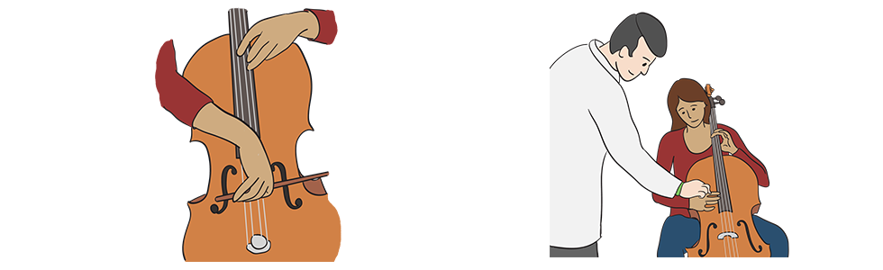

Module: Self-Advocacy
Cindy Mendelson, PhD, RN
Lucy, a woman with scleroderma, was scheduled to have a fusion of three of her finger joints. She advocated for her needs with her surgeon, who agreed to do what she asked. Lucy had been a musician for years and was unwilling to give up this important part of her life. She explained what she did at her pre-surgery appointment: “I took my cello to his office. I was sitting in the waiting room with the cello case. When they called me in, I carried my cello in. I said I need my fingers to at least bend enough to play.” She worked with her surgeon to determine the position of the fusion that would enable her to continue to play, which might not have happened if she had not been an effective self-advocate.
Listen to the testimonial on finding the right rheumatologist – one who is familiar with the latest information and who will be your advocate.